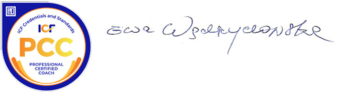

About me
As a certified coach (PCC ICF Erickson College International, Vancouver) and a licensed career advisor (Wyższa Szkoła Europejska (Tischner European University), Krakow), I offer professional support to organizations and private individuals, grounded on the experience I gained during the many years of my work with people, and the sound understanding of business I acquired working in a global corporation. I also hold a diploma of post-graduate HR management college at the AGH (University of Science and Technology), as well as an Iberian Studies degree I received at the Jagiellonian University.
My services include career coaching, career advising, and life coaching.
I work with people who seek to change and advance their professional careers and private lives, as well as with those who wish to find an healthy work-life balance. Assisting my clients in setting relevant goals and achieving them, I lead them through difficult decisions and help them overcome their internal limitations.
My business experience spans for over 17 years. As a HR Manager in an international company, my job was to develop, create and optimize recruitment processes (over 150 projects), organize training and development schemes and supervise training curricula, budgets, and delivery for over 400 employees. I was responsible for talent and performance management – here I gained experience in HR project management on both local and international level; i.e., I piloted the ‘My Talent” HR management tool in 3 countries (Poland, Czech Republic and Slovakia) as well as a Business Line Competence Mapping project.
During my career I co-operated with international and multicultural teams, including French, American, the Czech and Slovakian personnel.
Appreciating the value added of a multicultural environment, I find myself at ease working with international clients.
Due to this background, I am multilingual, and can work with clients in Polish, English, French and Spanish.
My job and my passion is to accompany people in their professional and personal development.
